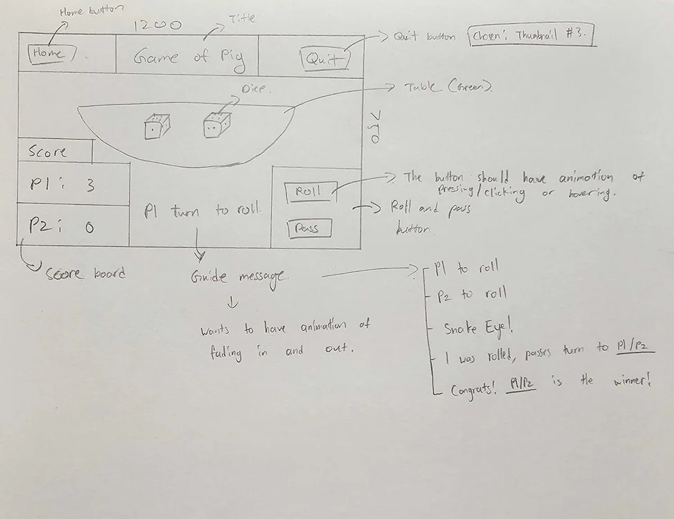

DES 157A · INTERACTIVE MEDIA · COURSEWORK
Game of Pig — The Dice Game
A browser-based turn-taking dice game with scores, state changes, and audio controls.

01 / GAME INTERFACE
Designing rules that users can follow
The final build combines HTML/CSS presentation with JavaScript game logic, dice interactions, score updates, reset/navigation buttons and volume control. This makes it a relevant example for game UI and front-end interaction roles.

02 / INTERACTION DESIGN
Making game state visible
The original JavaScript keeps track of two players, scores, the current turn, dice results, and a target score of 30. The interface updates its status text after rolls so players can understand what happened and what to do next.
- Roll: show animated dice and update the score when no die shows one.
- Penalty: a single one ends the turn; two ones also reset that player’s score to zero.
- Control: pass, reset confirmation, and home navigation provide ways to manage the session.
03 / IMPLEMENTATION DETAILS
Interaction built with HTML, CSS and JavaScript
The submitted source uses JavaScript event listeners for player actions and updates on-screen score and turn labels. Dice faces change through data attributes; the volume slider stores a preference locally in the browser.
04 / REFLECTION
Why this matters for game UI
This class project demonstrates state feedback, input handling and visual hierarchy in a playable browser interface. It is a course exercise rather than a commercial game, and the archive does not document formal usability metrics.
ORIGINAL MATERIALS
Explore the work
Portfolio edition: revised visual design, active-player highlighting, recent-roll history, bilingual labels, responsive layout and safer controls. The original course submission is preserved separately.